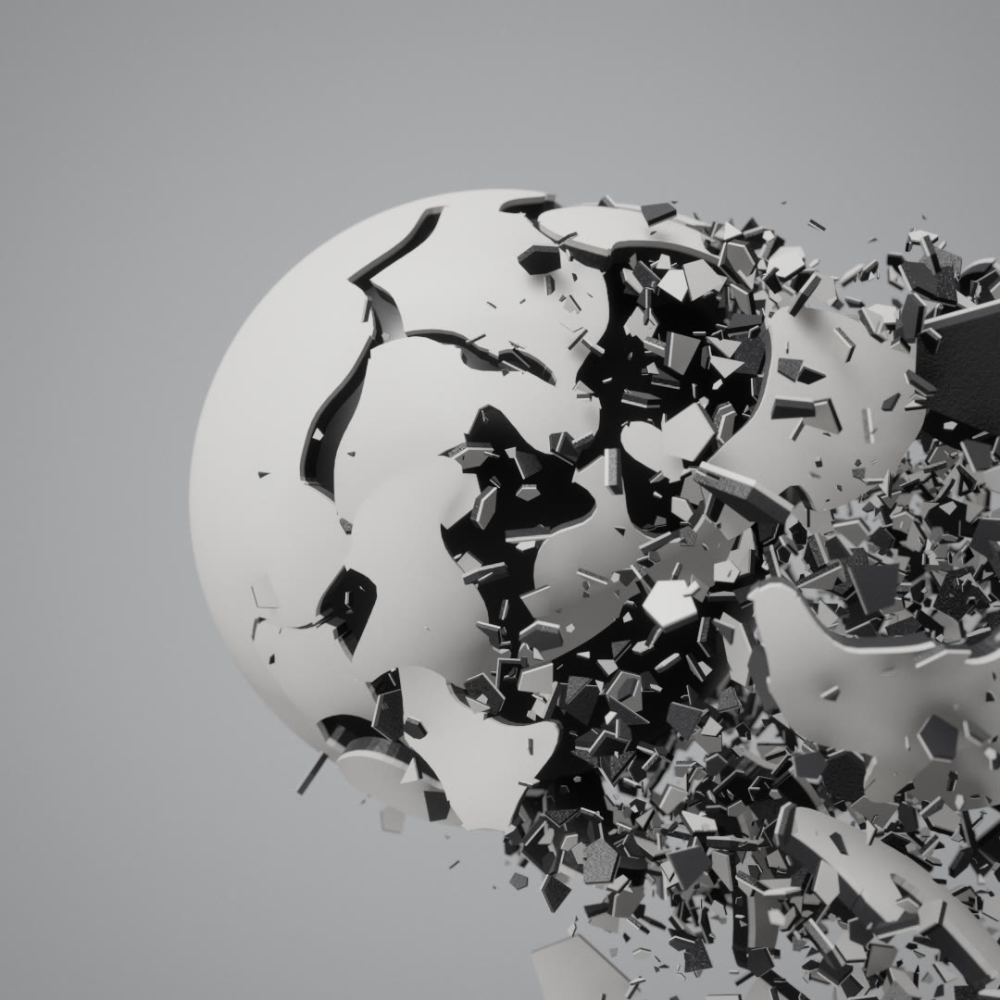

How Shatter bursts
Shells, fruit, porcelain, bronze, obsidian and iridescent glass caught a split second after they burst. Every piece is cut from the object's own surface, with a real thickness and torn walls, and the whole burst is a pure function of time that you can scrub back and forth.

A burst, frozen and scrubbed
Day 2's prompt was Shatter. An object is caught a split second after it bursts, like a high-speed photograph: its surface tears into curved pieces with real thickness, and they fly out with their filling, drops and chips of shell.
The subjects are a white shell over a dark core, grapefruit, porcelain, egg, chocolate, aged bronze, obsidian glowing from inside and an iridescent coating, on a sphere, torus, rounded cube, icosahedron, dodecahedron or Suzanne. Each burst plays in slow motion over 6 seconds and holds its last moment, and the bar at the bottom scrubs it.
Every piece sits at position = start + velocity × t, so the burst is a function of time and any moment of it can be shown. Most of the work is the fracture: a warped 3D Voronoi over the surface, triangles cut along the tears, and walls built between each piece's outer and inner skin. The shared pipeline renders it with depth of field on the burst, and the coating is real thin-film interference.
A subject is a skin, a thickness and a filling
Each shape is an evenly tessellated surface about the size of a unit sphere: a subdivided icosphere, a torus, a rounded cube, smoothed polyhedra, or Suzanne. The smoothed icosahedron and dodecahedron scale every point on a sphere by 1 / (Σ max(0, f·u)³²)^(1/32), a soft maximum over the face normals. Each subject then says what the skin is made of, how thick it is, how many pieces it breaks into, which way it bursts, and what is inside.
The sphere is an icosphere subdivided 40 times. The torus has radii 0.7 and 0.32 at 96 × 200 segments. The rounded cube starts as a cube with 56 segments per side: each point moves to the nearest point of an inner box of half-size 0.52, then out by 0.26 along the way it faces, so the corners are exact quarter-spheres with exact normals. The smoothed polyhedra use the dual solid's corners as face normals, take the gradient of the soft maximum as the normal, and are scaled to radius 1.05. Suzanne is loaded from an OBJ, subdivided twice, centred and scaled to radius 1.15. Each shape also has a depth, from 0.22 for the torus to 0.75 for the sphere, which says how deep the filling can sit.
Suzanne has parts thinner than a shell. For every vertex the code finds the nearest vertex behind it that faces the other way, within 0.4 units, using a spatial grid, and keeps 0.45 of that distance as the room there. The shell and the core are never pushed in further than that room, so the ears stay solid.
Rounding a polyhedron
In 2D with six face normals: r(u) = 1 / (Σ max(0, fᵢ·u)^k)^(1/k), rescaled so the largest radius is 1.05. k = 32 (as in the code) keeps the faces flat and rounds only the corners; low k turns it into a circle.
| Subject | Thickness | Pieces | Burst | Set | Inside / spray |
|---|---|---|---|---|---|
| Shell | 0.07 | 70 | side | grey | dark core left standing; chips |
| Grapefruit | 0.09 | 24 | radial | white | 30 pulp chunks, juice drops, juice-sac flecks |
| Porcelain | 0.05 | 36 | side | white | hollow, cream biscuit inside; chips |
| Egg | 0.025 | 44 | radial | white | 14 yolk chunks, yolk drops, chips |
| Chocolate | 0.12 | 20 | radial | white | 18 caramel chunks, caramel drops, chips |
| Obsidian | 0.045 | 80 | side | night | hollow, burning inside; thin splinter chips |
| Bronze | 0.07 | 48 | side | dark | hollow, verdigris inside; chips |
| Iridescent | 0.05 | 60 | side | dark | hollow, dark backing; thin chips |
The shell is a matte off-white skin over a near-black inside. Under it stands a dark glossy core: the shape itself pushed in by the shell thickness plus 0.004, so it fits right under the pieces and is left bare when they fly. The grapefruit has a glossy orange skin pitted by oil glands over a thick white pith, which shows on every torn wall. Porcelain is a very glossy cobalt glaze (specular 1.6) over a cream biscuit with a thin rim. The egg is a 0.025 shell, speckled brown outside and white inside. Chocolate is a 0.12 slab with a glossy rippled coating, full of caramel. Bronze is worn metal, mottled and pitted, over a corroded inside with patches of green verdigris. Obsidian is 80 thin splinters of black glass that burn orange inside, on a near-black set with more bloom. The iridescent subject is a thin-film coating over a dark backing.
Cut along a warped Voronoi diagram
The pieces are cells of a Voronoi diagram on the surface. Centres are chosen by farthest-point sampling: take 12 times as many random points as pieces, weighted by area, then repeatedly keep the point farthest from all chosen so far. That spreads them evenly without a grid look.
A straight Voronoi gives polygons with dead-straight edges, which read as computer-cut. So each point's position is warped by smooth noise before it is compared with the centres: q = p + w·noise(4p), with w = 0.22 by default. The cell edges become wandering tears. Obsidian splinters instead: distances along the direction away from the impact count for less, so its cells stretch into long shards radiating from where it was hit.
The impact is the shape's vertex farthest out along the burst direction. The burst direction has its own random stream from the seed, so changing it never moves the rest of the layout. Cells that end up empty are dropped, so a subject can have slightly fewer pieces than it asks for.
Fracturing a disc
Splinter uses d² = |q − c|² − (1 − s²)·((q − c)·ô)², where ô points from the impact to the cell's centre. Obsidian uses s = 0.3 with a small warp of 0.05.
Cutting the triangles
Every vertex belongs to its nearest centre. A triangle whose three corners share an owner simply goes to that piece. When two owners meet, the triangle is clipped in two along the boundary, at t = f_p / (f_p − f_q) on each crossing edge, where f is the difference of the two distances. Both pieces compute exactly the same crossing point, because the edge endpoints are always taken in a fixed order, so the tear is watertight. A triangle with three owners goes whole to the owner of its centre.
A triangle on a boundary
Every piece has a thickness and torn walls
Each piece gets an inner copy of its surface, pushed in along the normal by the subject's thickness, flipped and rewound. Every edge used by only one polygon of the piece (counted before the clipped polygons are split into triangles) is a torn edge, and gets a wall quad joining the outer and inner copies, with the normal cross(B − A, n_A + n_B). A per-vertex shell value runs from 1 on the outer skin to 0 on the inner one, across the wall. On thin parts like Suzanne's ears the thickness is capped at 0.45 of the distance to the opposite surface, so the inner copy never pokes through.
The shader uses the shell value to paint the layers. The outer colour wraps round the top of each torn wall as a thin rim band, and the inner colour fills the rest. Inner faces get a fine grain bump and a faint sheen, like the soft inside of a peel. The grapefruit and egg skins also transmit: the key light hitting the back of the inner layer comes through, shadowed from that side, so thin skin glows. Chunks and drops use the same transmission.
Each piece's geometry is centred on its own middle, so it spins about it, and its pattern is computed in that local space. The film is the exception: it reads each vertex's position on the whole shape, so its colour bands run on across the cracks. Bronze reverses the metal: the outside is fully metallic, with roughness rising where it is mottled, and inside the verdigris spots metalness drops to zero, so the green reads as a crust over raw metal.
A piece in cross-section
The layer mask is smoothstep(1 − rim, 1 − 0.6·rim, shell): the outer colour reaches down the wall to 1 − rim and is solid above 1 − 0.6·rim. The shell subject uses a rim of 0.35 with a white outside and a near-black inside.
A frozen moment is a straight line in time
There is no physics engine. Each piece has a start position, a velocity and a spin, and its pose at time t is just start + velocity·t and a rotation of spin·t about its own axis. The Explosion slider maps to t from 0 to 0.6, and Play advances it over 4 seconds. Scrubbing back and forth is exact and free, and a seed always gives the same burst.
A radial burst sends every piece out along its own direction. A side burst comes from an impact on one side, chosen at random inside a 40° cone. Pieces get an energy that falls off with angle from the impact, so the far side holds still while a stream of fragments sweeps away and down.
In a side burst, each piece launches along half its own direction plus the burst direction plus a small push to the side and down, (0.15, −0.35, 0), normalised, with random scatter of a quarter of its speed. Pieces with zero energy keep their place and angle, so that side of the object stays whole. A radial burst sends each piece along its own direction with scatter of a fifth of its speed. A piece's direction is the average normal of its surface, leaned away from the centre.
Scrub the burst
Piece speed is (2 + 2r)·e and spin (2 + 7r)·e rad/s, where r is random and e the energy (drawn here at reduced scale so the pieces stay in frame). Drops leave the torn edges at 1 + 6.5·r^2.2 and stretch along their velocity by 1 + 0.35·|v|²·min(1, 8t), thinning to size / stretch^0.25 across, which reads like a fast shutter without any motion blur. Only radial subjects (fruit, egg, chocolate) have drops, so the side burst shows pieces only.
Side-burst energy
e = clamp((cos θ + 0.1) / 0.8, 0, 1)^1.6: full energy within 45° of the impact, nothing past 96°.
Spray, chips and chunks
Drops (up to 3000) and juice flecks (up to 1000) start 0.02–0.10 below the inner face at a random torn edge and leave along its normal with a little jitter. Flecks fly at 0.8 of the drops' speed and tumble. Their size is (0.0025 + 0.03·r⁴) / √(speed / 2): mostly fine mist, a few fat drops, and the fast ones smallest.
Chips (up to 4500) start halfway through the shell. Each is an irregular 3-, 4- or 5-sided slab with its top in the outer colour and its bottom in the inner one, 0.012 to 0.082 across. About 1.2 % are big ones, 0.12 to 0.24 across, flying 1.6 times as fast plus 2. Their directions are drawn with rejection sampling against the burst energy, with a floor of 0.15, so a side burst throws them in its stream and even far-side chips move a little. Obsidian stretches its chips into slivers 2.6 times longer and much thinner, with no big ones.
Chunks of the filling start 0.3 to 1.0 of the shape's depth below a random surface point and fly out at 0.4 to 1.6 units per second, slower than the pieces, so the filling trails the skin. They are three lumpy noise-displaced icospheres, squashed by the subject's lumpiness and capped by the clearance to the nearest surface.
The Spray slider reveals a prefix of a fixed, seeded list, so more spray adds particles without moving the ones already there. Chunks are not affected by it. The pieces and the core are one mesh each; chunks, drops, chips and flecks are instanced, with unused instances at zero scale.
Scrub, play, reroll
The bar at the bottom holds Rewind, Play/Pause, Randomize and a scrubber with a percentage readout. Rewind stops and returns to 0. Play runs from where it is to 100 % over 4 seconds, starting over if it is already at the end, and also unpauses the page. Dragging the scrubber stops playback.
The panel has Subject, Shape, Explosion (the same value as the scrubber), Spray and Rotation, the auto-orbit speed from 0 to 2. Under Depth of field are Focus and Aperture. Changing the subject resets exposure, bloom and vignette to its set. Drag to orbit between 3 and 14 units; panning is off.
Space pauses, R randomizes, Tab hides the interface and P saves a screenshot (Shift+P at twice the size). Randomize rerolls the subject, shape, explosion and spray and picks a new seed, which gives a new fracture, burst direction and spray layout. Rotation, Focus and Aperture are kept. The url carries the seed and any setting that differs from what that seed gives, and it is read before the first build, so a copied link reproduces the exact frame.
Iridescence from real thin-film optics
The iridescent subject is coated with a film 260–620 nm thick (wandering across the surface with noise) of index 1.38 over a base of index 2.6. For 16 wavelengths from 400 to 700 nm, the shader computes the Fresnel amplitudes at both interfaces for both polarisations, the phase difference 4π·n·d·cos θ₂ / λ of the light bouncing inside the film (θ₂ is the refracted angle inside it), and the Airy reflectance that results. The spectrum is weighted by the CIE colour-matching functions and converted to linear sRGB. The coated face then reflects like a metal of that colour, which shifts as the viewing angle changes.
Film colour by thickness and angle
(1 − N·V)⁶, is emitted at the outer silhouette.Focusing on the burst
Depth of field comes from the shared pipeline, which blurs a moving view with a fast gather and, once the view holds still, averages up to 256 frames rendered from across the lens. How that works is on the rendering pipeline explainer. Day 2 renders with a fixed time, so the frame holds still whenever the camera does; by default it orbits, so that means pausing (Space) or setting Rotation to 0.
What Day 2 adds is the focus. Every frame it measures the distance from the camera to the shell pieces where they are now: Focus 0 puts the focal plane on the nearest piece and 1 on the farthest, and the slider runs a little past both ends. Aperture sets how blurred something infinitely far would be, up to 2.4 % of the image height; 0 turns depth of field off. A rebuild restarts the lens average, because the materials change.
Blur against distance
F = max(0.4, near + (far − near)·Focus) and blur(z) = 0.024·Aperture·|1 − F / z| of the image height, here for pieces between 4.6 and 8.4 units away.
The studio is only in the reflections
There is no floor or backdrop geometry. The background is the pipeline's clear colour: white, grey, dark or night. White is 16, far above white, so it tonemaps to pure white at an exposure of 0.62; the darker sets raise exposure to 0.9–1.1 and use a vignette of 0.5–0.6 in place of a studio gradient, and night adds bloom for the obsidian's glow.
The studio is baked once into an environment map: a seamless curved cyc (floor 0.5, wall 0.55), a key softbox up and to the left (intensity 9, size 0.45), a fill at 0.45 and a dim ceiling disc. Its spherical-harmonics irradiance lights the diffuse. The key is also a real light that casts PCSS soft shadows, auto-fitted to the burst and denoised, so pieces shadow each other and the core. Ambient occlusion has a floor of 0.2, so the insides of deep pieces never go black. On every resize the camera distance is set so a sphere of radius 2.6 fits the narrower field of view, capped at 14.
Shapes are built on first use and cached; until a new one is ready the last burst stays on screen. All shaders compile in parallel before the first frame. A rebuild happens only when the subject, shape or seed changes, and it restarts the lens average. Frustum culling is off on the instanced meshes, because their spray reaches far outside the source geometry's bounds.
For recording tools, window.app exposes the canvas, params, pipeline, camera, controls and transport. preload() builds every shape, nextLook({subject, shape, seed}) switches look and replays the burst, frame() places the orbit, focusAt() pins focus and warm(n) renders n still frames so shadows, AO and GI settle before capture.
| Budget | Desktop | Phone |
|---|---|---|
| Pipeline tier | high: MSAA 4, 2 GI slices | medium: MSAA 2, 1 GI slice × 8 steps |
| Drops / chips / flecks | 3000 / 4500 / 1000 | same |
| Rebuilds | only on a new subject, shape or seed; sliders only re-place instances | |
Controls
- Drag to orbit, scroll or pinch to zoom.
- The bar at the bottom rewinds, plays, randomises and scrubs the burst.
- Subject and Shape pick the object. Explosion: how far into the burst. Spray: how much filling, drops and chips fly.
- Rotation: how fast it turns.
- Depth of field: Focus, from the nearest piece to the farthest, and Aperture.
- Auto change: a new burst every 10 seconds by default, or off.
- R randomises, Space pauses, Tab hides the panel, F goes fullscreen, P saves a screenshot.